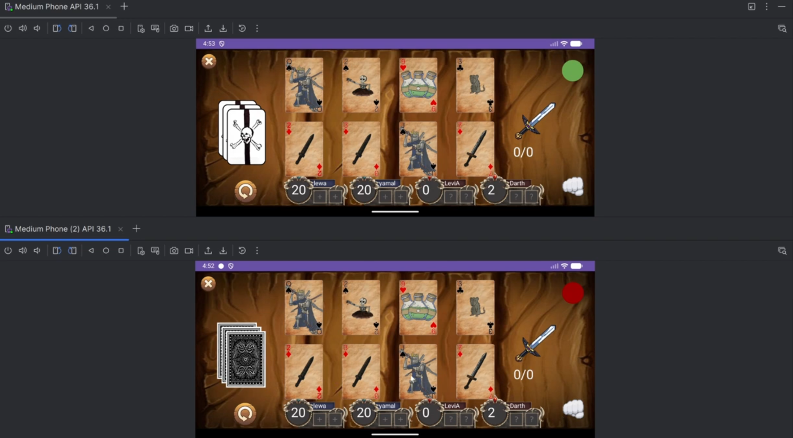

Hello!
My name is Jack Conrad, and I am a undergradute student at Iowa State University studing computer engineering. I enjoy developing software solutions for problems, which is what has led me to study computer engineering and why I have enjoyed the projects I have been a part of so far. Working in a team always comes with its challenges, but is one of my favorite parts of my undergradute studies because it helps me to learn and create things that are better than what I could create on my own.

In the software development class COMS 3090 at Iowa State, my group created an app for a card game named Scoundrel. I was on the backend portion for this project, and was in charge of all of the game logic and data as well as the notifications for the app. Our game took a slighly different take on the base game of scoundrel because we needed it to be 4 players, so we developed a 4 player version, with 2 teams of two, each trying to get out of the dungeon. Our app had many features, such as the base game, a singleplayer mode, leaderboard, friends list and chat, and basic settings. The entire app was written using Java, and the backend was specifically written using Springboot to interface with a MariaDB database.
You can contact me at jackconr@iastate.edu